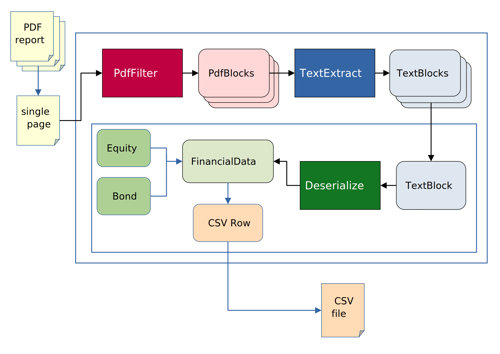

Code development
The focus of this guide is the development of the code related specific to the parsing of a pdf format. With pdf format we identify the series of operations and the code necessary to parse to csv a series of financial reports.
We decided to implement a structure flexible enough to be able to parse different reports, but making some hypotesys in order to semplify and standardize the parsing process. The aim is to make to not repeat all the code common to all the format so that the contributions can focus on enlarge the database of the supported pdf.
The general schema for parsing a pdf can be rappresented with the following:
The document is firstly divided in different pages and converted in a xml string using the PyMuPDF package.
The assumption is that each page of the document contain the necessary information to get the context and to understand
the meaning of the data relevant to construct the final csv file. This assumption seems quite resrtictive, but it is very essential in order to simplify
and design reasonably fast pasrsing algorithms. This assumption makes possible to implement data level parallelism on the pdf pages; now the current
implementation run on different batch of pages in parallel spawning different processes (when in BATCH MODE the parallelism is done at document
level and the different pages are processed sequentially). The idea behind the assumption is that a well designed pdf page should contain all the necessary information
for a human being to understand the context. If this assumption will show to be too resrtictive we could not assume that the context of the page would be the previous pages,
but we would be forced to parse the document subsequent times in order to get the relevant context.
Warning
Sometimes the information doesn’t seems to be self contained but this dependence is only a one to one, one to many or many to many relation between the different objects.
An example of this can be the case of the parsing of a pdf document containing some data related to some customers and in other pages, about orders and products.
In this example it seems that the Customer, the Product and the Order records are interdependent, but depending of the report design the algorithm can parse
the self contained information of Customers, Products and Orders and just right before the csv output relate the different record with an id field
(for uderstanding better the proposed approach for how to treat these kind of cases think at the concept of foreign key
in the database realm). The mechanism for supporting this degree of interdependance it is by the use of Promises and the output of PromisesResolutionContexs.
The assumption breaks in the presence of a true dependence of the information.
The developer that wants to add a series of reports to the supported ones, has to provide the specific implementation of the PdfFilter, TextExtract and Deserialize
functions (with them of the PdfBlock and TextBlock classes).
Each xml page will be parsed by a PdfFilter function that will output a list of relevant PdfBlocks. The content of these blocks is related and parsed by
a function called TextExtract and output a list of blocks that have a one to one relation with the information that will populate a csv row called TextBlock.
Each block is parsed independently into an object (an abstract FinancialData) that as to be one between the one reconnaissed by the system (for now Equity and Bond)
or a PromisesResolutionContext. The FinancialData can contain the actual data or deferred values called in this context ‘promises’ of value. In the most common case
the financial data contain all the relevant data and is serialized in a python dict in a predefined way and output to a the resulting csv file.
PdfFilter
The aim of this function is to filter from the xml rappresentation of the pdf page the relevant information using the layout or the typografic signature of them.
A constraint that we choose to try to respect is to use only information related to the grafical appearance of the pdf
without looking at the textual content and parse it semantically or evaluating the meaning. This constraint is important to divide the complexity
of parsing a pdf in more straight forward and standardized steps. The typical PdfFilter function will look at the font, the position of the different parts
of the pdf and eventually part of the text that is fixed and is considered part of the page layout (for example a header present in all pages), from this will
compute some bit of information and add converge to some PdfBlocks with their custom metadata.
TextExtract
The aim of this function is to extract from the PdfBlocks the relevant blocks of text and add semantic information. In particular
this function is the one that takes in input the list of the target companies and that look at the content of the variable text present in the PdfBlocks.
The typical TextExtract function will use regular expressions to understand the role of each part of test
and to extract the relevant information of the financial data related with the companies of interest.
Deserialize
The aim of this function is to transform the parsed information into a python object with some standard fields and validate them. This function will cast the data into the
python types that more reflect the nature of the data. In this steps no filtering is done, each TextBlock will correspond to a python object.
This constraint impose the focus of this function to the cast operation of the different field. The abstract class that this function output
is called FinancialData. Each class field is read only and consists in some core information and some additional infos. The concrete classes that inherit
from FinancialData for now are the Equity and Bond classes (the bond class has the interest rate and the maturity date as additional infos).
This objects are then casted in a predefined way in a python dict and then with Pandas on a dataframe
dumped directly in a csv file. The FinancialData usually contain all the concrete values but sometimes can happen that some fields are resolvables only
after complete parsing; for cases like that refear to the Promises section
PdfBlock and TextBlock
These block consists of three part:
A
BlockType(PdfBlockTypeandTextBlockType), that is a required label that identify the grafical and the semantic role of the information bit. These two fieds are implemented as enums and the possible values has to be chosen by the format developer (it is part of the format specification)A
metadatafield, that should contain custom data related to graphical and semantic information. TheBlockTypeshould be related to the expected keys in the metadata field. The implementation is a free and optional python dictAn optional
contentfield, that should contain the textual information in the pdf related to the block
in addition to these fields, the TextBlock has a PdfBlock related to him from which is is taken from (if it is computed from more, the most important).
Promise
This class is a generic class that exists in more concrete forms like SubfundPromise or CurrencyPromise and it represent a placeholder to an information
that can be resolved only after the pdf is completely parsed. When a FinancialData is istantiated the developer can ‘promise’ that the data
will be provided putting a promise as a value. The promise is caraterized by an id field that identify it in order to resolved to a specific value after the parsing.
The value will be resolved using a PromisesResolutionMap that link id to values or to other Promises in a chain that has to close with a concrete value.
In this way right before generating the csv the sobstitution are made and the actual field are computed using the map. This map is built merging
all the PromisesResolutionContexts in output of the deserialize function. The PromisesResolutionContexs should be something in the form of a python dict
with a key (that will be matched on the Promises ids) and a value (concrete or itself a Promise).
Warning
The id is expected to be provided one and only one time in the whole parsing process.
If the same id is provided in two different PromisesResolutionContexs the value is overwritten in a unpredictable way.
In practice
If you want to create the support for a new format you should choose a name and create a directory with same name into src/freeports_analysis/formats.
In this directory you can put the number of files and subdirectory that you want, the only constraint is that when imported as a submodule, the package expect
to find the three function PdfFilter, TextExtract, Deserialize with their respective signatures and the definition of the two enums PdfBlockType
and TextBlockType. You can take as reference the format called _default as a template. For helping the support for new formats we provide a series of
utilities into the submodule src/freeports_analysis/formats_utils. These utilities divide in four different kind of helpers:
useful function to create the parsing algorithm
decorators for adding standard functionalities to the parsing functions
decorators that provide a standard implementation of
PdfFilter,TextExtractandDeserializeenums containing common
PdfBlockTypeandTextBlockTypeimplementations
the aim is to see the repeatitive parsing patterns and create some routines and implementation that can be parametrized and reused.
To activate the support for a certain format, his name in capslock has to be added to the src/freeports_analysis/data/format_url_mapping.yaml
file; this file is composed with some format names (this name lowered will be the same of the module loaded to parse the pdf) and a list of
regular expressions used against url provided (URL) as a program argument to infer the correct format to use upon remote resource parsing.
Note
the order of the regular expressions and of the formats matters, because the inferred one is the first match of this list.
Last but not least there is a directory in the repository called devtools/ whit a template Jupyter Notebook
and some utilities for examining the pdf, developing the format specification and tests. This directory is intended as the directory where to
design and experiment with the different component before integrating in the package. In order to use the notebook, copy the template and rename it
as you want (deleting the .template. part).